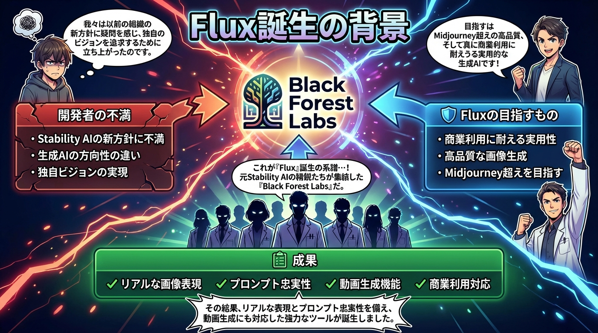
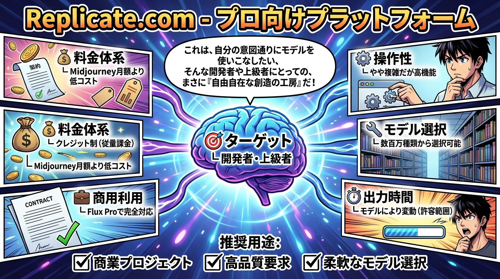
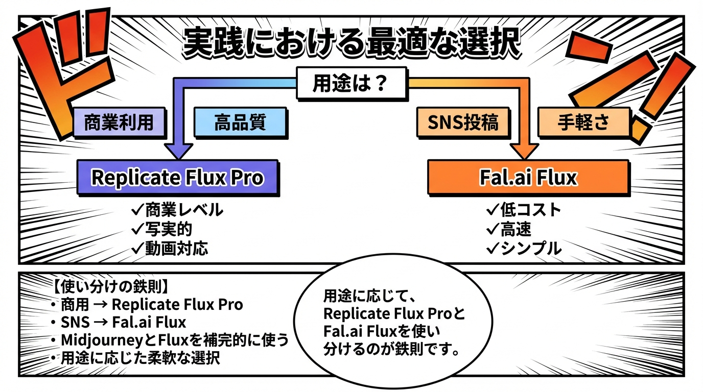

🚀 Flux: 次世代画像生成AIの実践活用
まん2000プロジェクト - 学習コンテンツギャラリー
💡 使い方: 画像をクリックすると新しいタブで開きます。拡大表示や保存が可能です。
📖 読書推奨: 上部の「読書ページを開く」ボタンから、電子書籍のように快適に読めるページにアクセスできます。
📖 読書推奨: 上部の「読書ページを開く」ボタンから、電子書籍のように快適に読めるページにアクセスできます。
2,047
文字
6
図解画像
1
4コマ漫画
📊 図解画像ギャラリー
1. Fluxの誕生背景と開発哲学
2. Midjourneyとの明確な使い分け

3. Fluxを使うための2つのプラットフォーム

4. Replicate.com - 開発者向けプラットフォーム
6. Flux Proモデル - 商業利用のベストチョイス
📖 プロ品質4コマ漫画

クリックで拡大表示